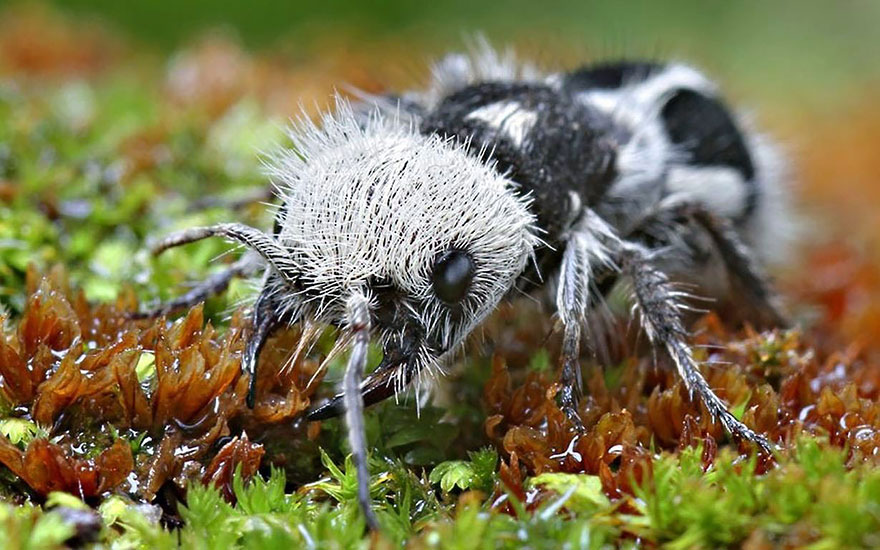
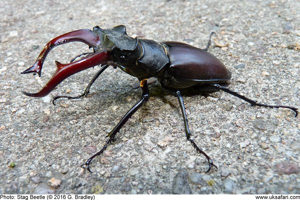

Introduction
In this page, you will discover new insects that will blow your mind so much that you won't believe that they could exist.
Now let's see what this page is offering
1.Panda Ants
Click here for more info about the antBasically, it's an ant that look like a panda. It's color is due to the extreme amount of hair that covers most of its body part. Living in colony, this sort of ant are only found in the South-America. Sadly, they are extremely rare and their live expectency is of maximum two years.
If you wondered if they are toxic, don't worry, their venom only kills insects of their size. Think of it as normal ant if you want but black and white
2.Hasselt's spiny spider
Click here for more info about the spiderThe spiky spider is one the most rare spider that exists on the planet. Only found on the island of Java in Indonesia, this spider physical traits are actually quite unique for a spider.
Their spike on their back are actually a way to avoid being eaten by bigger predator like frog by example and its bright color also does the same thing. But, his venom can be irritating if not treated soon enough.

3.Termite Soldier
Click here for more info about the termiteThis insect live in a colony that are known for making a huge mountains of dirt that are sometimes taller than an average human. Stronger than ants, soldier termites are about four times bigger than the worker termites in the colony.
Their main purpose is quite simple, they defend the colony against any threat that are attacking their base and fight in group everytime no matter what they are fighting.

4.Moth Caterpillar
Click here for more info about the mothLarva of a futur butterfly, this larva scares of many predators, even sometimes human. But in reality they are completely inoffensive. Its head is situated between the pink zone of the imitation of the head.
With the black spot that look like eyes and a mouth, this unique larva is actually quite common in the nature. But don't start to have hope, they are not in located in North America.

5.Blue Dragonfly
Click here for more info about the dragonflySpecimen found in North America, it is mainly known for his vibrant blue color that is very rare to found in nature. Faster than the average dragonfly, it has been recorded to be one of the fastest dragonfly in its species.
Actually no danger are around this insects, but can be very annoying around us because they eat micro-insects that are on us while we are in a forest.

6.Stick Insect
Click here for more info about the insectFound mostly in Australia, this insects is covered with a thick exosqueleton that protect it from predators. Compare to his smaller cousins, this insect is two times bigger than its relative.
There is actually no danger around this insects and also, it is very slow thus the reason why it looks like a stick.

7.Beetle
Click here for more info about the beetleFinally, the most known insects on this list is the black beetle. With horn that surpass the imagination and the law of nature, it is the strongest insect of all. Able to lift 850 times his weight, it is a unstoppable force able to defend itself mostly well among every insects.
Even with an enormous strenght, the beetle are by chance not venomous, thus they are harmless to us.
